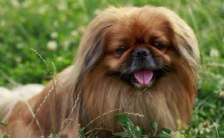
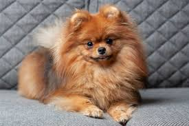
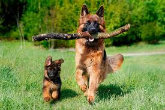
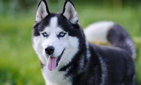

Las razas de perros mas amistosas.
Desde las mas pequeñas a las mas grandes.
Caracteristicas de los perros mas pequeños
Pekines
El Pekinés es una raza de perro pequeña y robusta, conocida por su cabeza grande y plana, hocico corto y ojos prominentes.
 Mas informacion sobre esta raza en el LinkShih tzu.
El Shih Tzu es conocido por su personalidad alegre y cariñosa, así como por su largo y abundante pelaje.

Pomeranian.
El Pomerania, también conocido como Pom o Spitz Enano Alemán, es un perro pequeño y activo con un pelaje abundante y una personalidad vivaz.
Caniche Toy.
El caniche toy, también conocido como poodle toy, es un perro pequeño y elegante, famoso por su pelaje rizado y variedad de colores.

Caracteristicas de los perros de gran tamaño.
Ovejero Aleman
El Pastor Alemán es una raza canina de tamaño grande, conocido por su inteligencia, lealtad y capacidad para trabajar.
Siberiano.
El husky siberiano tiene un carácter afable, una gran ética de trabajo y un gran instinto cazador
Labrador.
El labrador retriever es un perro de tamaño mediano a grande, conocido por su inteligencia, energía y carácter amigable.

Las diferentes razas de gatos.
A diferencia de los perros no se ven muchas diferencias de razas en los hogares.